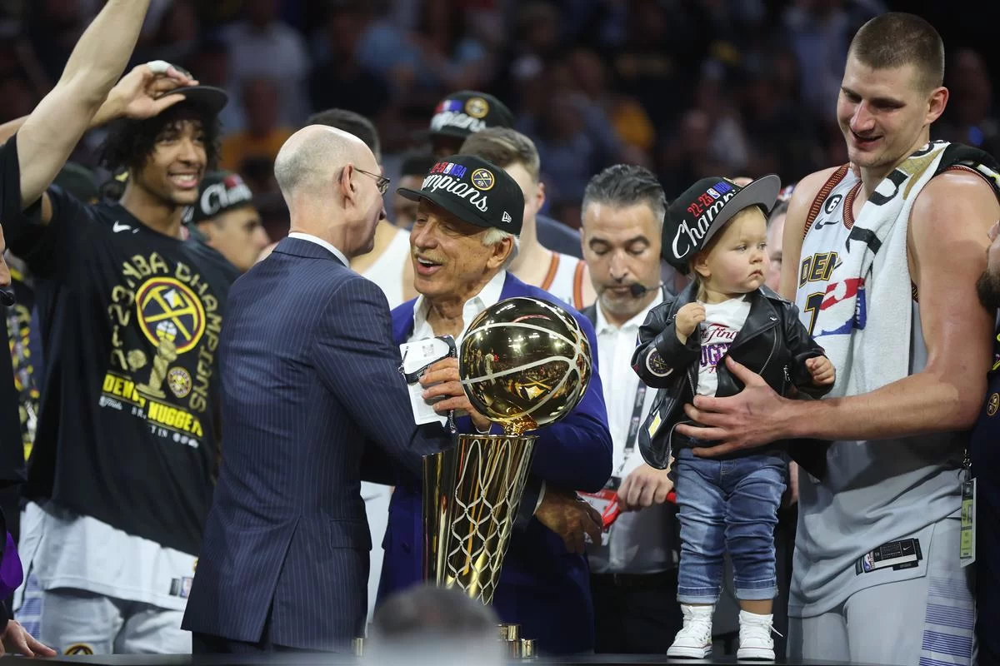
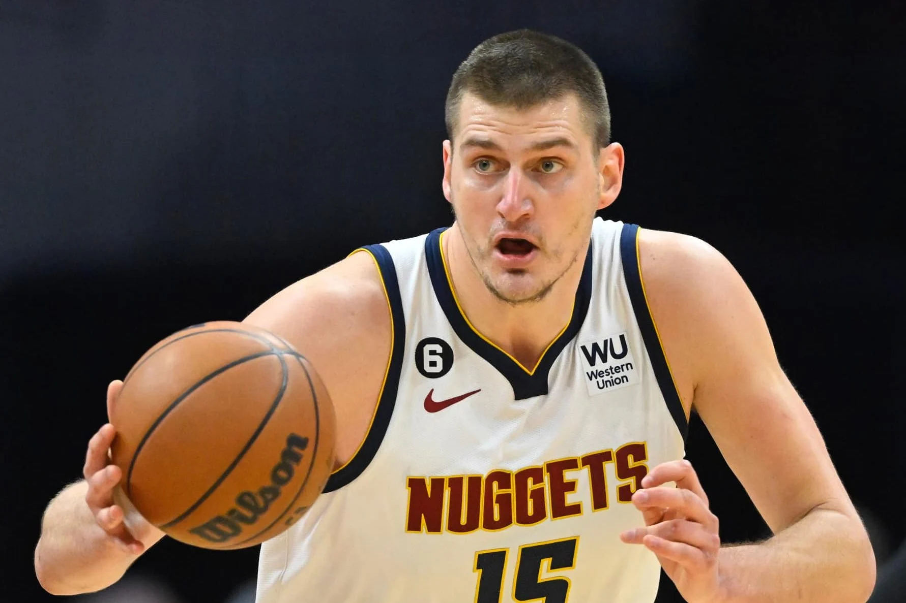

Denver Nuggets é o campeão da temporada 2022/2023
Após bater o Miami Heat por 94 a 89 o Denver Nuggets carimba a vitória no quarto jogo e se consagra o grande campeão da temporada, liderados por Nikola Jokic e Jamal Murray o time de Denver conseguiu seu primeiro titulo. O time teve que bater times como Minnesota Timberwolves, Phoenix Suns, Los Angeles Lakers e por fim o Miami Heat para chegar ao título.

Sua fase regular foi forte terminando com 53 vitórias e 29 derrotas, teve uma campanha sólida e ja nos playoffs sua dominancia era absoluta, com Nikola Jokic comandando o time e tendo grande impacto nos jogos em pontos e assitencias,assim garantindo o titulo de MVP da temporada para o pivô, seu titulo ja era apontado como certeiro pela maioria dos analistas. Nas finais contra o Miami Heat o campeonato ja era especulado como garantido para eles, mesmo o Heat tendo um bom time liderado pelo Ala Jimmy Butler com ajuda de jogadores como Tyler Hero e Bam Adebayo ainda não era capaz de parar a maquina Servia que prevaleceu durante a série

A dominancia do time foi tanta que são considerados um dos times mais dominantes da NBA na era pós jordan, tendo incriveis 16 vitórias e somente 4 derrotas nos jogos de playoffs, sendo 2 pro Phoenix Suns, 1 pro Minnesota Timberwolves e 1 pro Miami Heat. Esse incrivel numero em series de playoffs fez o time chegar ao patamar de times históricos na era Pos Jordan como o San Antonio Spurs de 1999, o Los Angeles Lakers de 2001 e o Golden State Warriors de 2017.